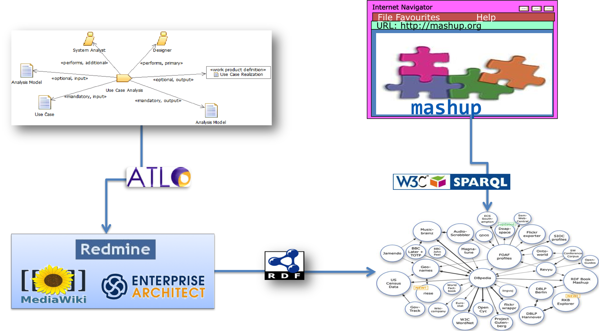

<!DOCTYPE html>
<html lang="es">
<head>
    <meta charset="utf-8">
    <title>Software Process Deployment & Evaluation Framework (SPDEF)</title>
    <meta name="viewport" content="width=device-width, initial-scale=1.0">
    <meta name="description" content="Data Integration and Analysis Server">

    <!-- Le styles -->
    <link href="./css/bootstrap.css" rel="stylesheet">
    <style>
    body{
        padding-top: 20px;
        text-align: justify;
    }
    #nav{
        margin-top: 5px;
        margin-bottom: 15px;
    }

    #nav .btn-group{
        clear: both;
        float: right;
        margin-bottom: 10px;
    }

    h1{
        border-bottom: 1px solid #ddd;
        padding-bottom: 10px;
        margin-bottom: 10px;
        margin-top: 20px;
    }

    #capturas .row{
    }
    </style>

    <!-- Le HTML5 shim, for IE6-8 support of HTML5 elements -->
    <!--[if lt IE 9]>
      <script src="http://html5shim.googlecode.com/svn/trunk/html5.js"></script>
      <![endif]-->

  </head>

  <body>

    <div class="container">
        <div class="row">
            <div class="span5">
                
            </div>
            <div id="nav" class="span6 offset1">
                <div class="btn-group">
                    <a href="#introduction" class="btn">Introduction</a>
                    <a href="#resources" class="btn">Available Resources</a>
                    <a href="#casestudies" class="btn">Case Studies</a>
                    <a href="#about" class="btn">About</a>
                </div>

            </div>
        </div>

<hr/>	

<h2 id="introduction">Software Process Deployment & Evaluation Framework</h1>

	<p>Welcome to this web portal. This pages describes a framework for the deployment and evaluation of software process using supporting tools. Here, we can find the software artifacts developed under this framework and some case studies. 

        <p>To be completed. Below, a figure of the general framework is presented:</p>

	</br>

	<div align="center"></div>
	
<hr/>

<h2 id="resources">Available Resources</h2>
	
	<h3 id="method">General Method</h1>

		<p>To be completed</p>
        
	<h3 id="models">Models</h1>

		<p>Here, you can find a list of models related with this framework available in different formats, such as XMI for generic UML tools, Ecore for Eclipse modeling technologies and RDF for linked data technologies.</p>
		<ul>
		<li><a href="http://spi-fm.uca.es/spdef/models/deployment/swpm/1.0">Software Work Product Model (SWPM)</a></li>
		<li><a href="http://spi-fm.uca.es/spdef/models/deployment/spcm/1.0">Software Project Control Model (SPCM)</a></li>
		<li><a href="http://spi-fm.uca.es/spdef/models/genericTools/wikim/1.0">Wiki tool Model (WIKIM)</a></li>
		<li><a href="http://spi-fm.uca.es/spdef/models/genericTools/vmm/1.0">Visual Modeling tool Model (VMM)</a></li>
		<li><a href="http://spi-fm.uca.es/spdef/models/genericTools/itm/1.0">Issue Tracking tool Model (ITM)</a></li>
		</ul>

	<h3 id="models">Tools</h1>

		<p>Here, you can find a list of useful tools related with this framework</p>
        	<ul>
		<li>Software Process Deployment toolkit (SPDT). A complete toolkit for deploying software process in supporting tools
            	<li>Abreforjas: A tool for extract and publish linked data from software forges</li>
            	<li>EasyData: A tool for extract and publish linked data from software forges from regular web applications</li>
		<li>D2R in Enterprise Architect: An instance of D2R server customized for using it in Enterprise Architect tool</li>
        	</ul>
		
	<hr/>


<h2 id="casestudies">Case Studies</h2>


	<h3 id="cs_openup">Case Study: Deployment of OpenUP methodology on process-supporting tools</h2>

	<p>To be completed</p>


	<h3 id="cs_susteval">Case Study: Sustainable Evaluation of People Skills on Collaborative Projects</h2>

	<p>In this section appears the design and the results of the a case study about the sustainable evaluation of collaborative projects in software forges.</em></p>
        
        <p>The subject of the case study is a course on <em>Web Engineering</em> of the 5th year of Computer Science degree. Most significant skills developed in the course are the organization and planning abilities and teamwork (cross competences), the knowledge of the methods, techniques and tools for Web application development (cognitive) and their application in the complete engineering cycle of a Web application (procedural), besides the motivation for quality development and independent learning of new methods and tools (attitudinal). </p>
        
        <p>Our case study, was carried out during the second part of the 2011/12 academic year with a PBL approach. The documentation of the developed integration process are available <a href="./cases/peopleSkills/ETL">here</a>.</p>
        
        <p>The source code of the analysed projects, including stats generated by StatSVN tool are available <a href="./cases/peopleSkills/proyectos">here</a>. Furthermore, the textual deliverables of each of projects are hosted in a <a href="http://wikis.uca.es/wikiIW">MediaWiki</a> installation. The  collaborative workspaces of each project can be found in this <a href="https://www.assembla.com/profile/dodero">page</a>.</p>
        
        <p>Finally, the results of this case study are presented in <a href="./cases/peopleSkills/resources/IW_forgeassessment_comparativa.csv">CSV</a> and <a href="./cases/peopleSkills/resources/IW_forgeassessment_comparativa.xlsx">XLSX</a> format</a>.</p>
        
	<h3 id="cs_quality">Case Study: Automation of Quality Technical Reviews</h2>

	<p>To be completed</p>


	<hr/>


<h2 id="about">About</h2>

This website is part of the Phd dissemination "Un framework para el despliegue y evaluacion de procesos software" by Iván Ruiz Rube at University of Cádiz, Spain. More info at ivan (dot) ruiz (arroba) uca (dot) es

<hr/>

</div>

</body>     
</html> 
